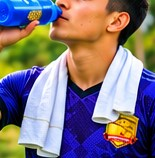
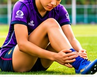
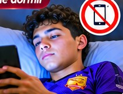
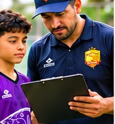

BARRACUDA F.C.
REVISTA DIGITAL
INICIO
NOTICIAS
ARTÍCULO
IDIOMA / LANGUAGE
Español
English
Português
Français
Deutsch
Italiano
SALUD Y FORMACIÓN DEPORTIVA · ARTÍCULO N.º 5
Imprimir / guardar como PDF




DISCIPLINA · UNIÓN · GRANDEZA